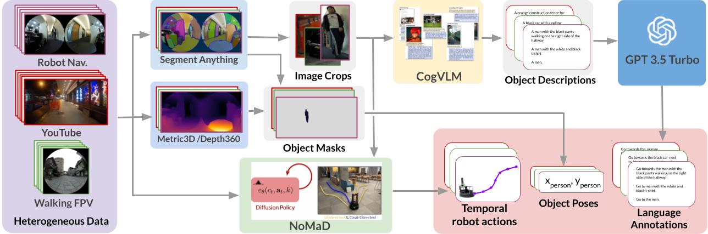

The world is filled with a wide variety of objects, ranging from teapots and wine glasses in households, to park benches and traffic cones outdoors. For robots to be useful, they need the ability to find arbitrary objects described by people. In this project, we present LeLaN, a novel approach that consumes unlabeled, action-free egocentric data to learn scalable, language-conditioned object navigation. Our framework leverages the semantic knowledge of large vision and language models to label in-the-wild data from a variety of indoor and outdoor environments. These annotations include diverse instructions that capture a wide range of objects with varied granularity and noise in their descriptions. We apply LeLaN to label over 130 hours of data collected in real world indoor and outdoor environments, including robot observations, YouTube video tours, and human-collected walking data. Extensive experiments with over 1000 trials carried out in the real world show that LeLaN enables training a policy from unlabeled action-free videos that outperforms state-of-the-art methods on the challenging zero-shot language-conditioned object navigation tasks while being capable of inference at 4 times their speed on edge compute.
The key idea behind building a VLMap is to fuse pretrained visual-language features into a geometrical reconstruction of the scene. This can be done by computing dense pixel-level embeddings from an existing visual-language model (over the RGB-D video feed of the robot) and back-projecting them onto the 3D surface of the environment (captured from depth data used for reconstruction with visual odometry). Finally, we generate the top-down scene representation by storing the visual-language features of each image pixel in the corresponding grid map pixel location.
We encode the open-vocabulary landmark names ("chair", "green plant", "table" etc.) with the text encoder in the Visual Language Model. Then we align the landmark names with the pixels in the VLMap by computing the cosine similarity between their embeddings. We get the mask of each landmark type with the argmax operation on the similarity score.
We generate the navigation policies in the form of executable code with the help of Large Language Models. By providing a few examples in the prompt, we exploit GPT-3 to parse language instructions into a string of executable code, expressing functions or logic structures (if/else statements, for/while loops) and parameterizing API calls (e.g., robot.move_to(target_name) or robot.turn(degrees)).
With open-vocabulary landmark indexing, VLMaps enables long-horizon spatial goal navigation with natural language instructions
With open-vocabulary landmark indexing, VLMaps enables long-horizon spatial goal navigation with natural language instructions
A VLMap can be shared among different robots and enables generation of obstacle maps for different embodiments on-the-fly to improve navigation efficiency. For example, a LoCoBot (ground robot) has to avoid sofa, tables, chairs and so on during planning while a drone can ignore them. Experiments below show how a single VLMap representation in each scene can adapt to different embodiments (by generating customized obstacle maps) and improve navigation efficiency.
A VLMap can be shared among different robots and enables generation of obstacle maps for different embodiments on-the-fly to improve navigation efficiency. For example, a LoCoBot (ground robot) has to avoid sofa, tables, chairs and so on during planning while a drone can ignore them. Experiments below show how a single VLMap representation in each scene can adapt to different embodiments (by generating customized obstacle maps) and improve navigation efficiency.
With open-vocabulary landmark indexing, VLMaps enables long-horizon spatial goal navigation with natural language instructions
A VLMap can be shared among different robots and enables generation of obstacle maps for different embodiments on-the-fly to improve navigation efficiency. For example, a LoCoBot (ground robot) has to avoid sofa, tables, chairs and so on during planning while a drone can ignore them. Experiments below show how a single VLMap representation in each scene can adapt to different embodiments (by generating customized obstacle maps) and improve navigation efficiency.